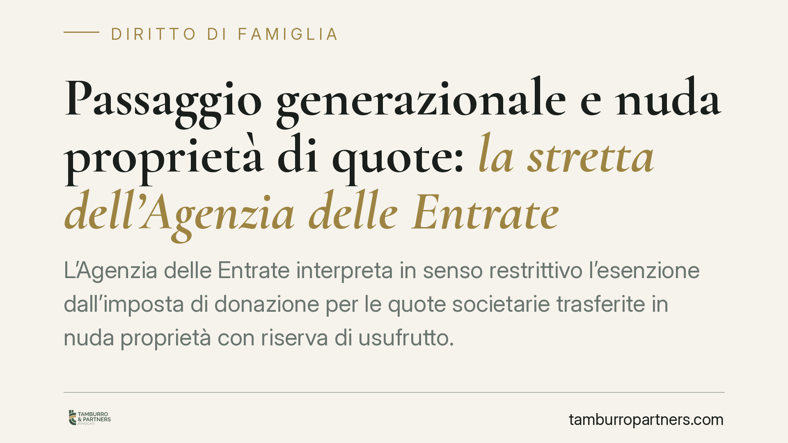

Passaggio generazionale e nuda proprietà di quote: la stretta dell'Agenzia delle Entrate
L'Agenzia delle Entrate interpreta in senso restrittivo l'esenzione dall'imposta di donazione per le quote societarie trasferite in nuda proprietà con riserva di usufrutto. Per beneficiare dell'agevolazione, il donatario dovrebbe acquisire poteri gestori effettivi, non la sola titolarità formale. Un orientamento che divide prassi e giurisprudenza e impone prudenza a chi pianifica il ricambio in azienda.

Il nodo
Il passaggio generazionale dell'impresa passa spesso per la donazione di quote societarie ai figli. Una tecnica diffusa consiste nel trasferire la sola nuda proprietà della quota, riservandosi il genitore l'usufrutto: in questo modo il capostipite conserva, per un periodo, i redditi e una parte del controllo, mentre il figlio consolida la titolarità in vista del subentro definitivo.
Su questo schema si è concentrata l'attenzione dell'Agenzia delle Entrate, che ha adottato una lettura restrittiva delle condizioni per fruire dell'esenzione dall'imposta di donazione.
L'inquadramento normativo
La norma di riferimento è l'art. 3, comma 4-ter, del D.Lgs. 346/1990 (Testo Unico sulle successioni e donazioni). La disposizione esenta dall'imposta i trasferimenti di aziende e di partecipazioni sociali a favore di discendenti o del coniuge, purché ricorrano condizioni precise.
Per le partecipazioni in società di capitali, il beneficiario deve acquisire o integrare il controllo ai sensi dell'art. 2359, comma 1, n. 1, c.c. (maggioranza dei voti in assemblea ordinaria). In tutti i casi, gli aventi causa devono impegnarsi a proseguire l'attività d'impresa o a mantenere il controllo per almeno cinque anni dal trasferimento, rendendo apposita dichiarazione. Il mancato rispetto dell'impegno comporta la decadenza dall'agevolazione, con recupero dell'imposta.
Il D.Lgs. 139/2024 è intervenuto sulla materia, ma le condizioni sostanziali della prosecuzione dell'attività e del mantenimento quinquennale del controllo restano l'asse portante dell'esenzione: è su queste che si gioca la partita interpretativa.
La lettura dell'Agenzia e il contrasto con la Cassazione
Secondo l'orientamento dell'Agenzia, la donazione della sola nuda proprietà con riserva di usufrutto non basterebbe: il donatario dovrebbe acquisire poteri gestori e diritti di voto effettivi, non la mera aspettativa della piena proprietà al termine dell'usufrutto. In assenza di un potere reale sull'impresa, l'agevolazione sarebbe negata.
Qui la questione si complica, perché la disciplina dell'usufrutto di quota non è uniforme. Nelle società per azioni, l'art. 2352 c.c. attribuisce di regola il diritto di voto all'usufruttuario, salvo diversa convenzione. Nelle S.r.l. e, ancor più, nelle società di persone, la ripartizione dei poteri tra nudo proprietario e usufruttuario dipende in misura rilevante dall'atto costitutivo e dagli accordi tra le parti. Trasporre meccanicamente la regola pensata per le S.p.A. a ogni tipo sociale è un errore che può indebolire la pianificazione.
La giurisprudenza di legittimità ha mostrato aperture verso il contribuente, valorizzando la sostanza del trasferimento generazionale rispetto alla rigida verifica dei poteri gestori. Va detto con chiarezza: il riferimento puntuale a una specifica pronuncia (numero e anno) va confermato in redazione, per evitare citazioni non verificate. Ciò che rileva, allo stato, è l'esistenza di un contrasto tra la prassi amministrativa e un orientamento giurisprudenziale più favorevole al contribuente.
Perché conta per chi pianifica
Il tema è al confine tra diritto tributario, diritto societario e diritto di famiglia. Nel passaggio generazionale entrano in gioco anche gli equilibri tra legittimari e la tutela della quota di riserva: il patto di famiglia (artt. 768-bis e ss. c.c.) resta uno strumento da considerare per prevenire liti ereditarie, in alternativa o in aggiunta alla donazione di quote.
Chi ha già donato la nuda proprietà confidando nell'esenzione rischia oggi una contestazione. La decadenza o il diniego comportano il recupero dell'imposta di donazione e l'applicazione delle sanzioni previste dal D.Lgs. 471/1997, oltre agli interessi. La posta in gioco, quindi, non è teorica.
Cosa fare in concreto
- Verificate l'assetto dei poteri nell'atto donativo: chi esercita il voto e la gestione dopo il trasferimento? Adeguate lo statuto se necessario.
- Distinguete il tipo sociale: le regole sull'usufrutto di quota cambiano tra S.p.A., S.r.l. e società di persone. Non applicate schemi standard.
- Documentate la prosecuzione dell'attività e il rispetto del vincolo quinquennale, rendendo con precisione la dichiarazione richiesta dall'art. 3, comma 4-ter, TUS.
- Valutate strumenti alternativi, come il patto di famiglia, per coniugare esenzione fiscale e tenuta degli equilibri tra legittimari.
- Sottoponete l'operazione a interpello quando l'importo o la complessità lo giustificano, così da ridurre il rischio di contestazioni successive.
Restiamo in un contesto in evoluzione: consigliamo una valutazione caso per caso, senza affidarsi a soluzioni preconfezionate.
---
Contributo informativo a cura di Tamburro & Partners Avvocati. Non costituisce parere legale.
Ogni famiglia ha il suo equilibrio.
Separazione, divorzio, affidamento, assegno: se vuoi un confronto riservato su una specifica situazione, scrivi allo studio. Ti rispondiamo entro un giorno lavorativo.